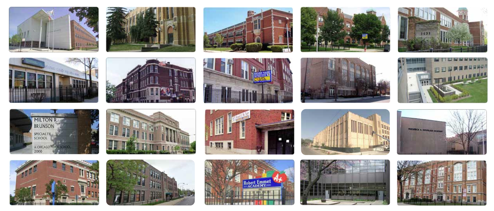
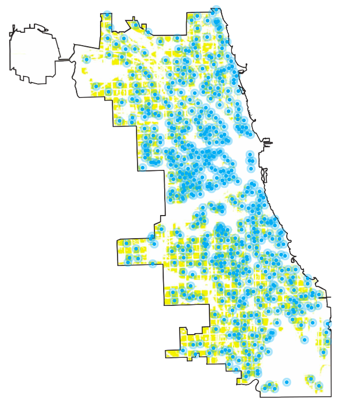
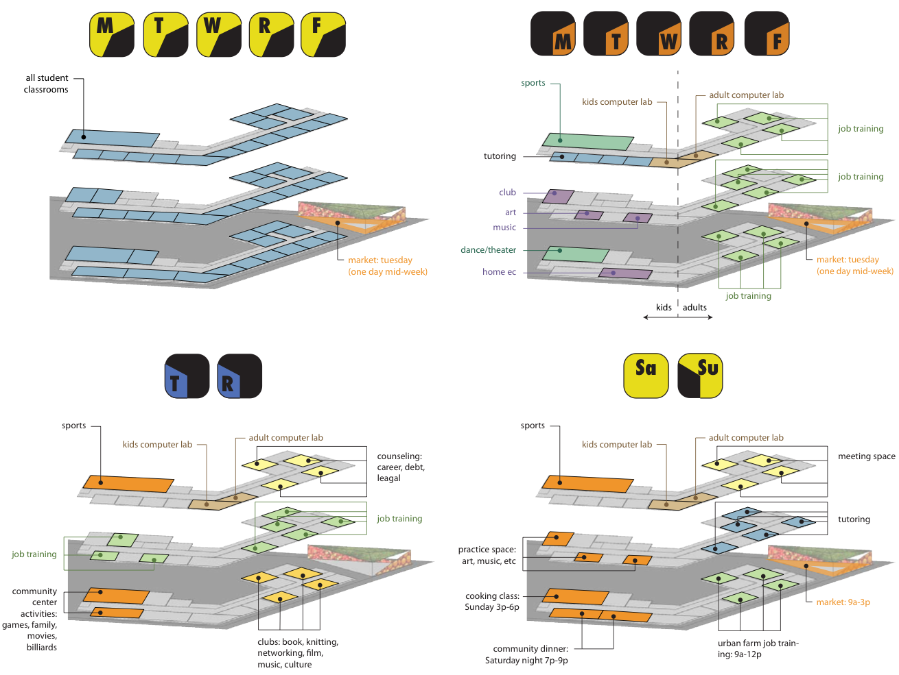

Reaching Equity
Public schools in Chicago are being labelled "underutilized" and closed. Meanwhile, Chicago residents need more community hubs.
Public schools should be a public service for all.
Thanks to those who are part of our Innovator's Dugout:
This intervention recognizes that existing public school buildings are both beautiful and accessibly dispersed (within walking distance of most Chicagoan's homes) almost perfectly throughout residential neighborhoods.


public schools shown against Chicago's residential zones, 2011.
Since public schools are meant to serve students equally city-wide, instead of demolishing them, we should be finding ways to improve them. Once reprogrammed with resources and training for both children and adults, a regular farmer's market, community activities, and a variety of social services, public schools can transform into hubs of genuine public service and community.

Powerful Questions
- How can these high-quality historic school buildings be reused?
- How can we take advantage of the walkability of elementary schools throughout residential areas?
- How can the school schedule be adjusted to accomodate the larger community activities?
Want to collaborate on this project? Join our team. Become a partner.
We are looking for a furniture designer, a researcher, a database developer, and apprentices who want to develop these skills. Please email us for more information.